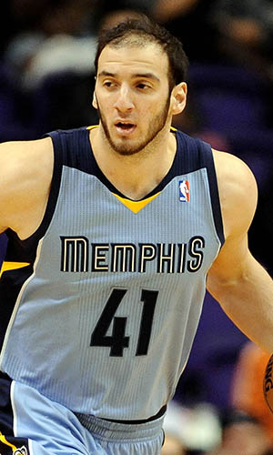

|  |
Матчи |
81 |
|
Передачи (всего/среднее) |
37 |
0.5 |
| В основе |
3 |
|
Подборы в защите (всего/среднее) |
305 |
3.8 |
| Время (всего/среднее) |
1348:16 |
16:39 |
Подборы в атаке (всего/среднее) |
120 |
1.5 |
| Очки (всего/среднее) |
419 |
5.2 |
Подборы (всего/среднее) |
425 |
5.2 |
| 2-очковые броски (всего/среднее) |
182/358 |
2.2/4.4 |
Перехваты (всего/среднее) |
29 |
0.4 |
| 2-очковые броски (% реализации) |
50.8% |
|
Потери (всего/среднее) |
69 |
0.9 |
| 3-очковые броски (всего/среднее) |
0/0 |
0/0 |
Блокшоты (всего/среднее) |
63 |
0.8 |
| 3-очковые броски (% реализации) |
0% |
|
Блокшоты соперника (всего/среднее) |
22 |
0.3 |
| Штрафные броски (всего/среднее) |
55/85 |
0.7/1 |
Фолы (всего/среднее) |
148 |
1.8 |
| Коста Куфос |
Штрафные броски (% реализации) |
64.7% |
|
Коэффициент полезности (всего/среднее) |
528 |
6.5 |